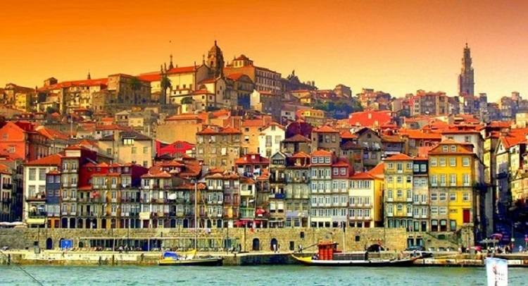
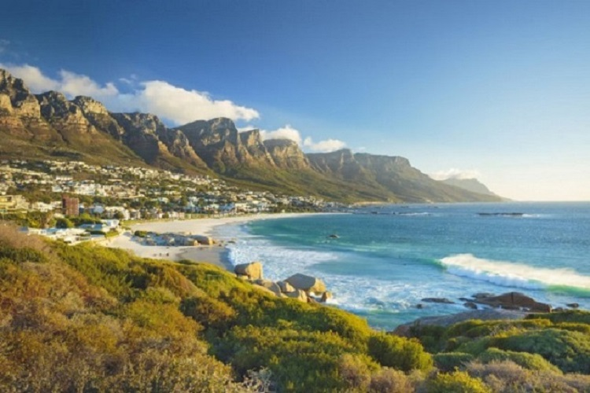
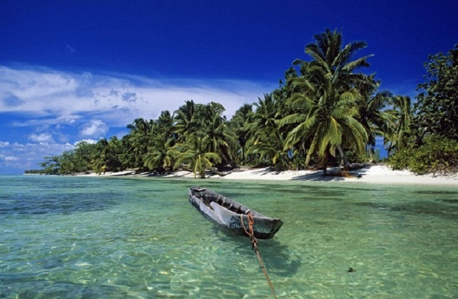
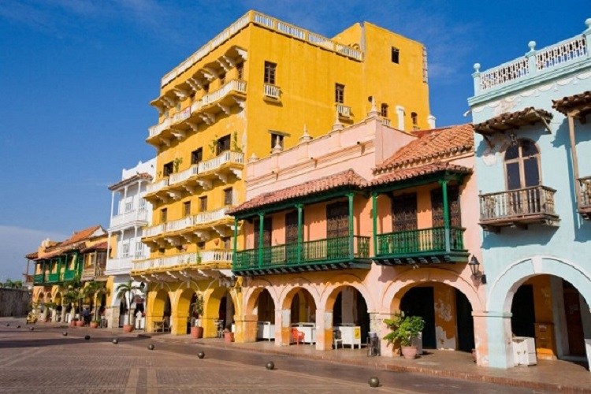
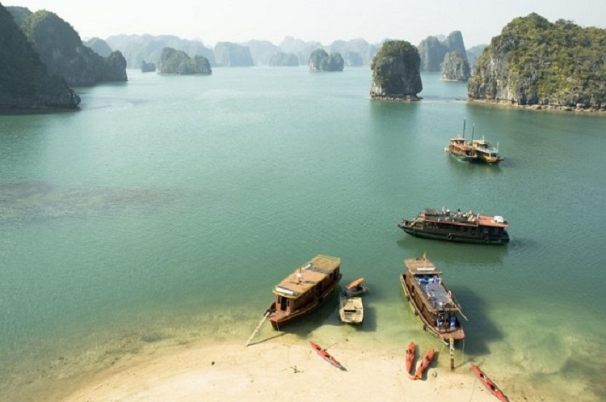
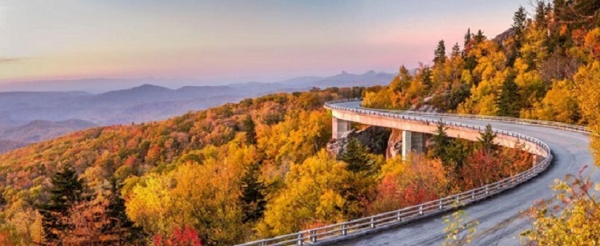
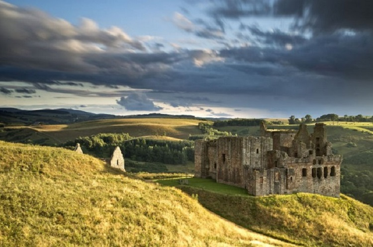

Top 7 Best Places To Travel In 2017
In 2017, you're going to need your passport–and your sense of adventure. This top destinations to visit this year will have you heading out on safari, exploring historic Eastern Europe and South America, sunbathing on the beaches of Asia and Africa, and discovering hidden gems both at home and abroad. We tapped our bucket lists, insider knowledge, and industry experts for the 17 destinations to have on your radar when planning this year's getaways, adventures, and retreats. Here, the best places to escape to in 2017. Ready, set, jet.
1 Portugal
There's a renaissance happening in Portugal, a land made famous by explorers–and modern-day, well-heeled travelers are taking notice. Despite its cultural riches, Portugal never reached the same level of tourism popularity that its neighbor Spain has enjoyed for decades. But the westernmost country of continental Europe has everything a traveler could want: great food, fabulous art, robust history, sensational wine and a bustling contemporary culture scene that's reshaping the country's international reputation as a hotbed for creativity. Highlights of time in Portugal include exploring the cities of Lisbon and Porto, which beautifully marry their ancient histories and contemporary cultures; the lush, vineyard-filled Douro Valley; the fairytale town of Sintra and the pristine, rugged beaches of Comporta.
2 Cape town, South Africa
Cape Town is not only one of the most picturesque cities in the world, but is is also one of the most fun! As a holiday destination, it's hard to beat; there is something gorgeous to look at at every turn! If you are looking for something with a sense of history, Robben Island is an incredibly moving experience. Culture vultures will love the colorful houses and people of Bokaap, which is also very insta-worthy. For outdoor enthusiasts and adrenaline junkies there are endless options, like hiking up Table Mountain, kite surfing and swimming with sharks. If you want to take your holiday at a more leisurely pace, head up to to the wine regions and drink your way through the scenic mountainside. If you are traveling with little ones (or even if you aren't!) Boulders Beach is a fabulous walk through millions of little Africa penguins. When dining out, be sure to visit Harbor House in Kalk Bay (ask for a table by the window), The Roundhouse, La Perla, Tokara in Stellenbosch or simply pack a picnic lunch to enjoy in Kirstenbosch Gardens. – Anita Patrickson, Celebrity Stylist and Cape Town native.
3 Madagaskar
This isn't your average safari. Jungles abound here, but beaches do too, and whether on land or by sea, an overwhelming amount of indigenous species ranging from lemurs to whales are on view for the adventurous set. Almost all of Madagascar's native species can't be found anywhere else, which explains why travel junkies are quick to call it the Galapagos of Africa. New resorts emerging this year make seeking refuge in a five-star room after a day of exploring that much easier.
4 Colombia
Colombia feels like five countries in one. The Caribbean coast (Cartagena, Barranquilla and Santa Marta) is a different world from the Andean interior (Bogotá, Medellín); both have a different feel than the Pacific Coast (including Cali, the country's third largest city) or the the Amazon to the South and the plains that border Venezuela on the East. Cartagena and Bogotá are both great cities with something unique to offer, but are equally dynamic.
However, one rising destination is Santa Marta, South America's oldest city. It's a four-hour drive from Cartagena at the foot of the beautiful Sierra Nevada de Santa Marta and home to Tayrona National Park, known for its coastal lagoons, rainforest and rich biodiversity. History buffs can spend their time here trekking around archeological sites, and Instagrammers will fall hard for the country's colorful cityscapes. For those who are looking for a cultural dance experience, Cali is famous for its salsa music clubs.
5 Vietnam
A visit to Vietnam requires time. To understand and appreciate its stunning cultures it is imperative to slow down and let the country's impressions sink in. Today, Vietnam is undergoing a period of peace, innovation, creativity and success–and the expressions of optimism are noticeable and a delight to witness. Must-visit areas of the country include Hanoi, Ho Chi Minh (formerly Saigon), Danang, Hoi An and the central coast. Highlights of time in the country include experiencing the burgeoning culinary scene, complete with amazing street-food to rival that found in Laos, Thailand or Korea.
6 Asheville, North Carolina
If you're a fan of Portland, Nashville, and Austin, or if you have done a stint or two at Burning Man or Coachella, Asheville is for you. This quaint spot in the Blue Ridge Mountains is home to a bustling food scene; three local chefs were nominated for James Beard Awards this year and visiting their restaurants is a must. The microbrewery scene here is expansive and evolving, and the arts culture and music scene is expanding just as rapidly, with over 200 artists showcasing their wares in the River Arts District. Think of this as North Carolina's versions of the Catskills, with a hippie vibe, hiking trails and haute versions of the types of food you want to eat to match.
7 Scotland
There's something incredibly calming about Scotland. Don't expect much by way of wild nightlife; instead, prepare to immerse yourself in history and culture, as well as some seriously amazing views. Edinburgh, the capital city, is filled with winding roads and cheerful restaurants and shops, while Glasgow plays host to exceptional museums, galleries and music and theater venues. The highlight of any trip to Scotland, though, is the Highlands, which make for the ultimate escape. Turn off your phone and take in the breathtaking views, imposing castles and peaceful lochs.